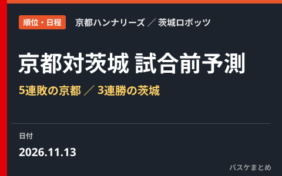

京都ハンナリーズ対茨城ロボッツの試合前予測、5連敗の京都と3連勝の茨城

11月13日19時15分から、京都ハンナリーズと茨城ロボッツが対戦します。会場はにっしんでんきアリーナ京都です。
この記事では、両チームの直近の試合を比べます。そのうえで試合を予測します。
【事実】京都は8勝7敗、茨城は9勝8敗
京都ハンナリーズは通算8勝7敗で、B.PREMIER西地区の5位です。総得点は1251、総失点は1193です。
茨城ロボッツは通算9勝8敗で、東地区の7位です。総得点は1432、総失点は1338です。
【事実】京都は開幕10試合で8勝2敗、その後は5連敗
京都は10月30日から5連敗中です。
相手は信州が2試合です。ほかは東京SRと北海道と宇都宮でした。
10月30日は信州に72-80、11月1日は信州に65-67でした。11月7日は東京SRに87-92、11月9日は北海道に79-85です。
11月11日は宇都宮に70-94で敗れました。4試合は8点差以内でしたが、最後の1試合は24点差でした。
【事実】茨城は11月1日の敗戦から3連勝
茨城は11月1日に北海道へ88-96で負けました。その後の3試合は、すべて勝っています。
大阪に86-68で勝ちました。琉球に80-72、秋田に95-83でも勝っています。
3試合とも、相手に80点台以下に抑えて勝ちました。
【分析】京都は得点が約13点減り、失点が約6点増えた
総得点と総失点から開幕10試合を割り出すと、京都は平均87.8得点で77.5失点です。得失点差は約プラス10.3点になります。
直近5試合は平均74.6得点、83.6失点です。得失点差は約マイナス9.0点に変わりました。
攻守の両面が落ちています。とくに得点の減り方が大きい形です。
【分析】茨城は直近3試合で約12.7点の得失点差
茨城の直近3試合は、平均87.0得点で74.3失点です。シーズン平均は84.2得点で78.7失点なので、失点が約4点少なくなっています。
京都は直近5試合の失点が83.6です。茨城が平均並みの84点前後を取る場合、京都の守備が踏ん張れるかが問われます。
【事実】シーズン平均は茨城が3ポイントとフリースローで上回る
3ポイント成功率は京都が30.8%、茨城が35.6%です。フリースロー成功率は京都が68.2%、茨城が80.9%です。
リバウンドは京都が41.0、茨城が36.9です。ブロックとスティールも京都が上回っています。
【事実】京都は宇都宮戦で序盤の3ポイントが響いた
京都は11日の宇都宮戦で、序盤から3ポイントを決められました。後半は守備の強度が上がった相手に、ゴール下も外角も崩されました。
岸本隆一選手は、悪い意味で試合に抑揚がなかったと振り返っています。できることから直し、時間のかかる点は積み上げると話しました。
川嶋勇人選手は、戦う気持ちや一体感は変える必要がないと話しています。クラブの公式コラムは、茨城戦も総力戦で挑むと結ばれています。
【予測】茨城がやや有利、鍵は京都の序盤の守備
予測は、茨城がやや有利です。直近の得失点差と、3ポイントとフリースローの成功率が理由です。
京都が勝つには、序盤の外角シュートを抑えることです。リバウンドの強みを生かし、速攻を許さない形が理想です。
不確かな点は3つあります。1つ目は、京都がホームで連敗を止める反発力です。
2つ目は、茨城が3連勝の勢いを続けられるかです。3つ目は、両チームの当日の出場状況が未確認である点です。